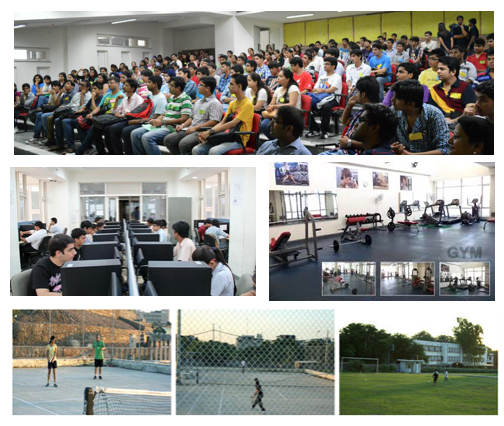

This project aims to study physical analytics of students in IIITD campus using smartphone sensors. A normal day of a student in campus consists of various activities such as attending classes, working in the lab, participating in certain sport activtiy, etc.
